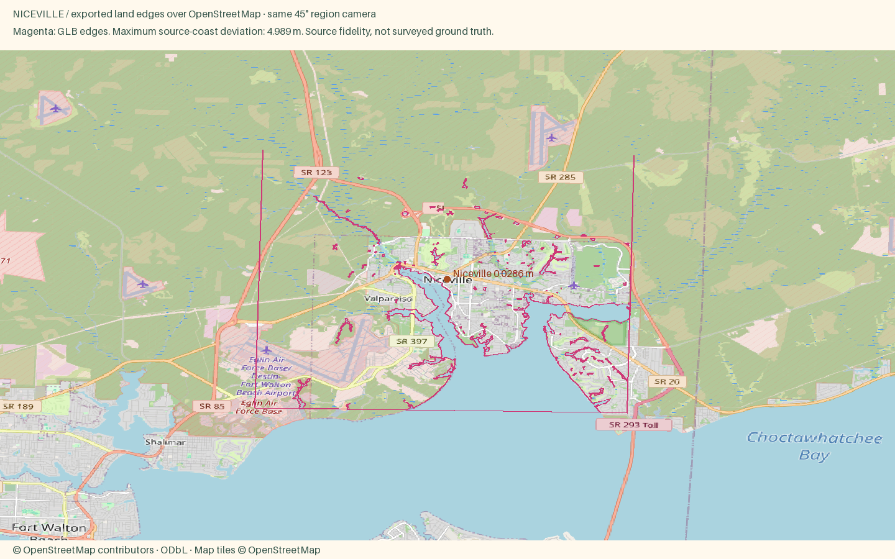

Niceville
Open atlas · Accuracy CSV · Sourced medians
Region
Niceville
Open districtBoggy Bayou, working docks and oak-shaded neighborhoods on Choctawhatchee Bay.
Source alignment

Manual fixes
- Town palette and waterfront hero curated from regional visitor references; facade color is editorial, not surveyed.
- Published prices retain their actual metric and period; thin markets are explicitly labeled.
- Four communities without named OSM place nodes use explicitly documented OSM locality or park reference anchors; these are not claimed as municipal centers.
- Existing Census land context continues beyond the OSM data rectangle, avoiding artificial water edges at the package boundary.
- Incomplete OSM footprints filled by non-overlapping Microsoft imagery footprints with separate source IDs.
Buildings include imagery-derived Microsoft Global ML Building Footprints (CDLA Permissive 2.0). Negative local IDs are not OSM IDs. Footprint provenance. The OSM overlay validates coast and district anchors, not the supplemental roofs.